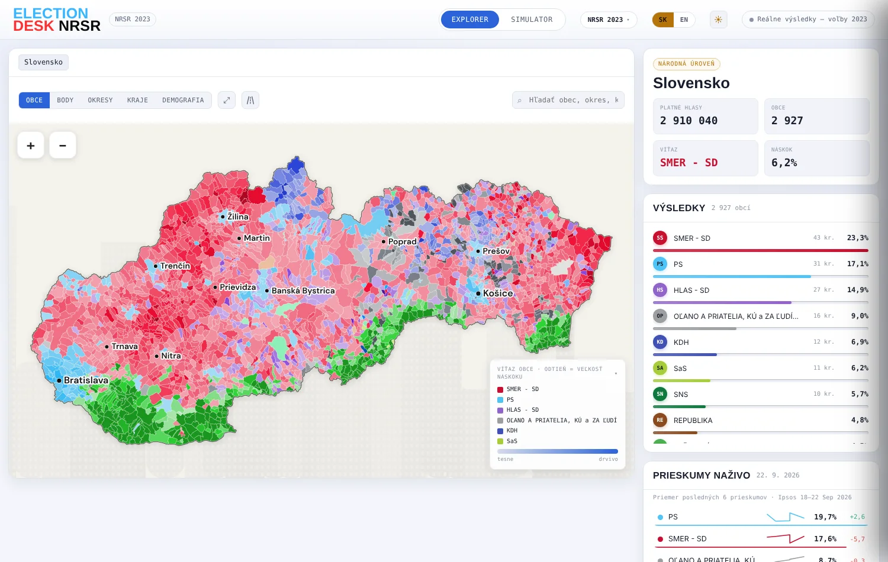
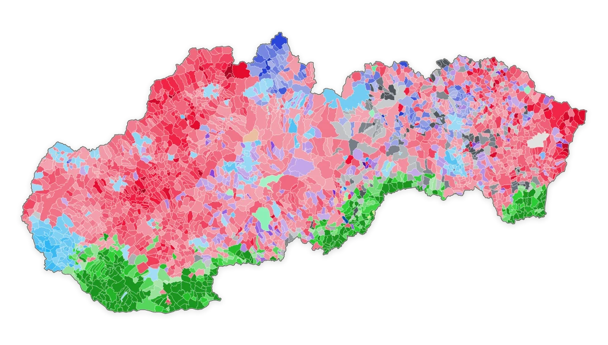
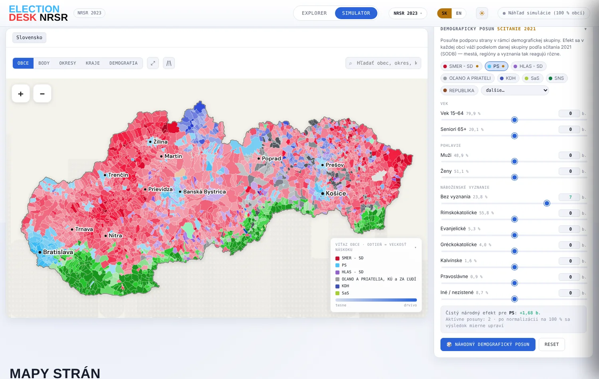
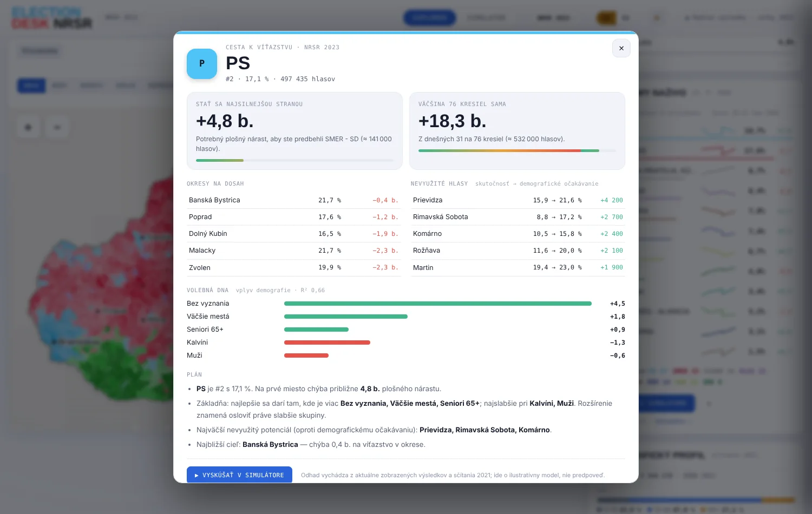
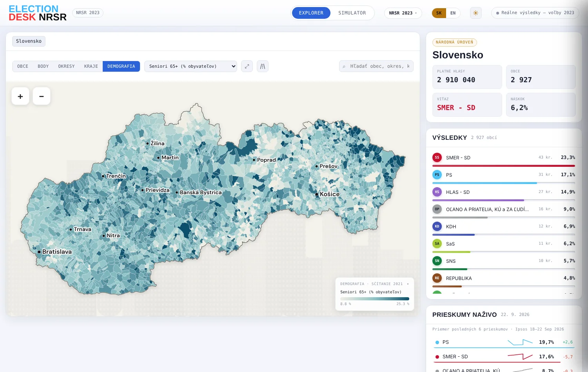

01
Mapa po obciach
Krémová základná mapa s názvami miest, plynulými prechodmi medzi režimami a letom kamery. Prepínajte obce, okresy a kraje; voliteľne zapnite diaľnice a rýchlostné cesty.

Interaktívna mapa výsledkov, simulátor s demografickým posunom, prieskumy načítané naživo z Wikipédie a mapa hlasov pre každú stranu — všetko na úrovni 2 927 obcí.
do posledného možného dňa volieb (28. 9. 2027) — dátum zatiaľ nie je vyhlásený

Načítavam z Wikipédie…
Krémová základná mapa s názvami miest, plynulými prechodmi medzi režimami a letom kamery. Prepínajte obce, okresy a kraje; voliteľne zapnite diaľnice a rýchlostné cesty.

Posuňte podporu strany medzi seniormi, ženami či ľuďmi bez vyznania. Efekt sa v každej obci váži podľa sčítania 2021 — mestá a regióny reagujú rôzne.

Pre každú stranu: o koľko bodov musí vyrásť, ktoré okresy sú na dosah, kde má nevyužité hlasy oproti demografii a aká je jej volebná DNA.

Vek, pohlavie a náboženské vyznanie z posledného sčítania — ako vrstva mapy aj ako profil každej vybranej oblasti.

Výsledky NRSR 2023 — tmavšia farba znamená vyšší podiel v obci.
Výsledky voleb: Štatistický úrad SR. Hranice obcí: ÚGKK SR (ZBGIS). Sčítanie 2021: ŠÚ SR (vek, pohlavie, vyznanie).
Prieskumy sa čítajú priamo z tabuľky na Wikipédii; logá a fotografie tiež. Cesty pochádzajú z OpenStreetMap.
Simulátor a analýzy sú ilustratívne modely, nie predpovede. Žiadny model nenahradí hlasy voličov.